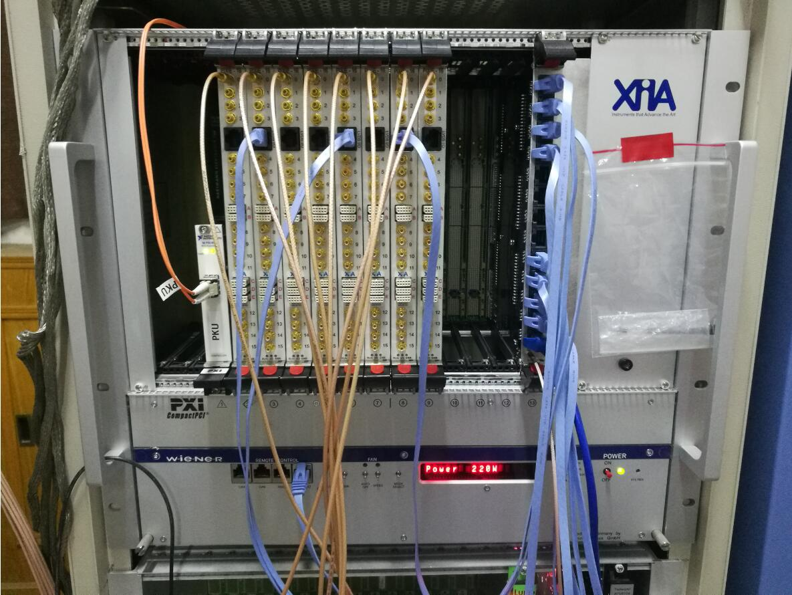
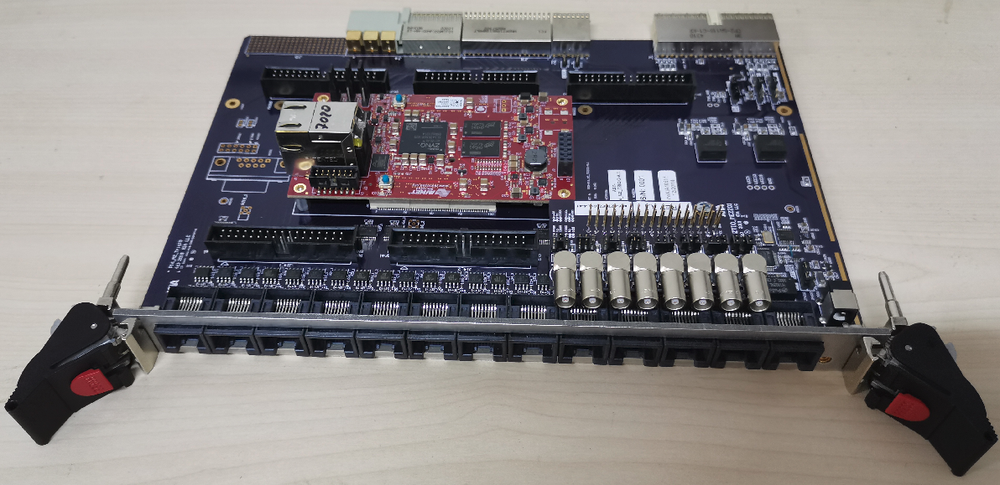
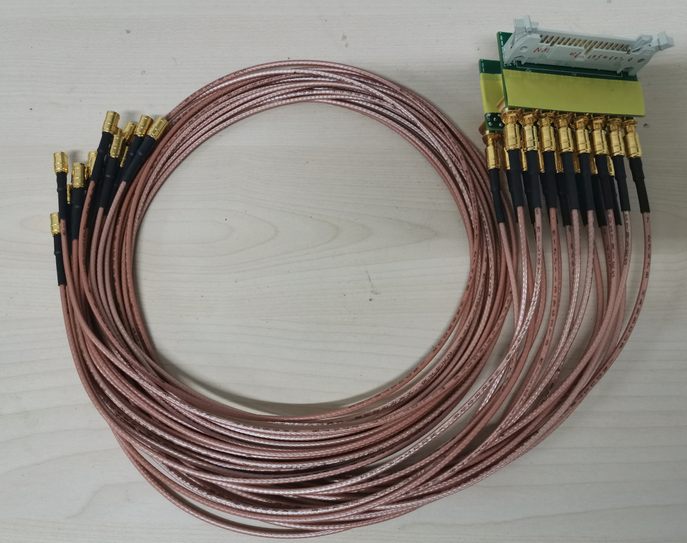

采购推荐¶
特别声明：北京大学实验核物理组与 XIA LLC 当前中国区代理北京华恒鑫达科技发展有限公司不存在任何形式的合作。任何打着北京大学实验核物理组名义的宣传都是非法的，请大家谨防上当受骗。关于产品硬件的性能、固件能力等信息，以本说明书为准。PKUXIADAQ 长期进行版本更新，请大家时常关注是否有新版本发布。如有任何疑问，请与吴鸿毅联系（wuhongyi@qq.com）
XIA LLC 推出的 Pixie16 系列采集卡，拥有 100M 12/14 bit、250M 12/14/16 bit、500M 12/14 bit 采样率/垂直精度的采集卡，PKUXIADAQ 支持以上任意采样率/垂直精度卡的混合使用。
采集卡¶
- 100M 14bit
HPGe/Clover
BGO
Si
CsI
gas det
…
- 250M 14/16 bit、500 M 14 bit
LaBr3
Plastic scintillator
Liquid scintillator
BaF2
…
对于快时间信号的测量，推荐优先购买 500M-14bit / 250M-16bit 两个型号， 从优化的角度来说，不一定 500M就能比250M得到更好的时间分辨。关于快时间的数字化测量，这是一个充满挑战的课题，针对不同的探测器，还需要先将探测器信号进行一定的低通滤波处理，并且优化固件中的CFD算法才能达到与模拟可比拟或者更优的效果。这个建议有一定实际测试经验之后再根据探测器类型进行大规模的采购。
机箱及配套¶
Pixie16 需要 XIA 定制的专用机箱。需要使用这个机箱的原因是通用的机箱电流不足以支持那么多插件的运行。另外，此机箱背板为定制背板，因此能实现及其复杂、高效的逻辑运算。
电脑控制器可采用光纤控制器或者同轴电缆控制器，这两个的区别在于，同轴电缆控制器线缆长度不超过 7 米（千万不要买1米或者3米的，机箱与电脑的摆放位置会被极大约束），也就是说采集电脑必须紧靠着机箱，而光纤长度选择范围较大，电脑可远离机箱。选择哪个方案区别仅在这个长度上，对数据传输效率、软件控制上没有本质的区别。但是光纤跟同轴电缆的差别在于光纤实现了光电隔离，获取系统跟控制电脑的地线是隔离的，而同轴电缆获取系统跟控制电脑地线是在一起的，这个有没有影响，取决于具体实验对噪声的灵敏情况，实验终端的地线情况等 另外，同轴电缆的比较便宜。
另外，控制器也可以选择嵌入式电脑，即一个小电脑嵌入在机箱最左侧，采集卡的数据直接传输到该电脑。采用该方案需要注意的几点是，PKUXIADAQ 仅支持 LINUX 操作系统，因此选择该方案需要购买 linux 操作系统的嵌入式电脑。另外，嵌入式电脑的硬盘容量较小，一般来说，需要配合外部的磁盘阵列（或者服务器）来使用才能满足核物理实验的数据存储需求（如果仅仅是简单测试那就不需要磁盘阵列，直接外挂一个 USB3.0 的移动硬盘即可），该方案适合于固定实验终端的配套获取使用，例如 MSU/NSCL 的做法，将数据通过以太网实时传到服务器上。这个方案需要一定的技术考虑，主要是需要一个网络架构来保证数据的传输不会影响数据计数率，也就是数据传输引起的死时间不会影响系统性能，这个需要比较专业的网络技术部门来提供技术支持。
另外，关于电脑控制器是采用 PCI 还是 PCIe 的，这个取决于电脑主板上的插槽，购买前请先考虑好要使用的控制电脑。但是现在采购的电脑，如果没有特别说明，默认采购到的将是只有 PCIe 接口的电脑。如果是 PCIe 的，还需要注意插槽的宽度，插槽分为 x1，x4，x8，x16，而且是想下兼容的，例如，一个 x4 宽度的控制器，可以插入 x4，x8，x16 的插槽，但是无法插入 x1 的插槽。
这里给出几个选项供大家参考
电脑端PCIe控制器
PXI-8360/PCIe-8361 机箱端使用 PXI8360 卡，电脑端使用 PCIe8361 x1卡，同轴电缆链接，记得指定要 7 米的电缆。
PXI-8360/PCIe-8362 机箱端使用 PXI8360 卡，电脑端使用 PCIe8362 x1卡，同轴电缆链接，记得指定要 7 米的电缆。
电脑端PCI控制器
PXI-8368/PCI-8366 机箱端使用 PXI8368 卡，电脑端使用 PCI8366 卡，光纤链接，光纤长度可选择 10/30/200 米。
如果需要多个机箱的同步使用，那就需要给每个机箱配套一个时间同步模块，该模块插在机箱背板，通过网线来实现不同机箱中的时间同步、触发信号共享等功能。

逻辑模块¶
MZTIO + MZTIO-MEZZ01 需要复杂实验触发逻辑的用户需要采购该配套模块。我们建议每个机箱配一个该模块。
PKU 固件中，通过前面板的网口将多重性选择的结果输出，然后通过外部的可编程逻辑插件来实现逻辑运算，最后将外部逻辑通过网口送到采集卡。外部逻辑信号与每个通道的自触发逻辑进行与运算作为有效触发信号。这样就能避免记录大量无用的数据。
外部可编程逻辑插件推荐使用 XIA 的 MZTIO 触发逻辑模块（该模块是我们与 XIA LLC 讨论开发的，具体情况可参考XIA官网介绍 https://www.xia.com/flexible-and-customizable-real-time-solution-interfacing-pixie-16-electronics-to-external-systems.html 。相比 CAEN 的类似功能模块 MZTIO 使用上更容易）。为了方便通过示波器来观测触发逻辑与采集门之间的关系、触发逻辑与 veto 的关系等，实现在束可视化远程调节采集逻辑，PKU 固件将通过机箱背板把监视信号传输到 MZTIO 模块，然后推荐使用配套的 8 通道转接板，监视信号通过 LEMO 连接器连接到示波器。当然，此 8 通道转接板也可作为信号输入使用，可通过该转接板将外部信号输入 MZTIO 模块参与触发逻辑的运算。
因此，采用该模块，可以取代传统电子学中的逻辑插件，并且具有可调节范围更广，逻辑缺陷少的优点。
34pin到16SMB转接线¶
由于核物理实验中双面硅微条路数在 200-300 路，规模较大的可达到 500-600 路。而硅信号的输出一般都是 34 pin 的连接器，Pixie16 采集卡的输入是 SMB 连接器，XIA 出厂默认为 BNC 转 SMB 连接线，在硅探测器上使用起来及其不方便，因此必须采用一个合适的转接器来实现。
为此，我们与 XIA 沟通，设计生产出上图中的转接器（第一版本），通过该转接器，多路数的硅探测器在信号输入变得容易，同时也消除了由于线缆排列不当造成的应力问题。用户根据需要采购。
其它一些可能有用的配套设备¶
本栏目介绍的硬件，不是必须品，用户根据实际情况自行选择。
一般的脉冲发生器产生的信号与实际探测器输出的信号还是存在较大区别的，特别是信号的上升沿部分无法调节，不容易构造出随时间变化的脉冲序列。
CAEN 的探测器模拟器专门为解决模拟探测器信号源而开发，它可用于没有探测器时候的获取调节联系，帮助用户更快熟悉获取系统。另外，由于它的可编程性、可重复性，能够用于检测获取系统的可靠性，评估系统的能力上限。
更多详细信息请阅读官网手册，CAEN DT5810B Fast Digital Detector Emulator https://www.caen.it/products/dt5810/